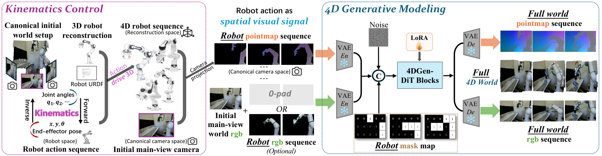
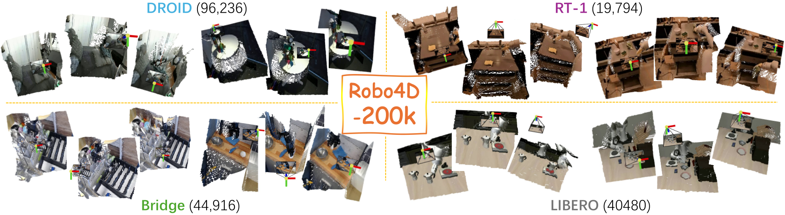
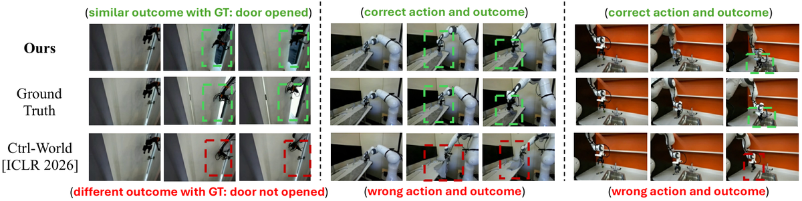
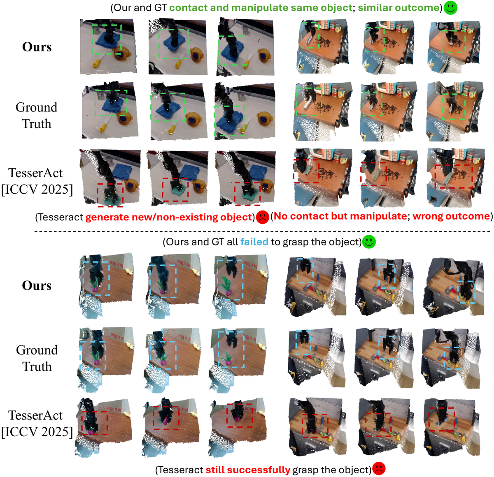
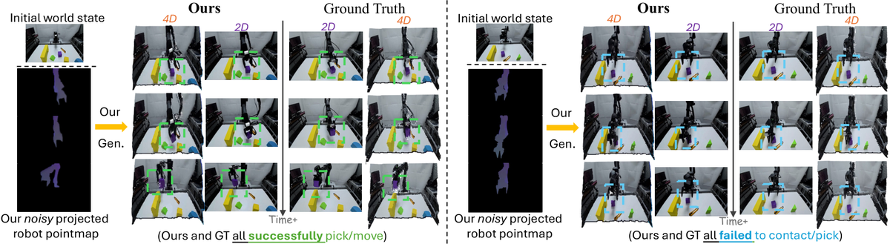

Kinema4D
简单摘要
模拟机器人与世界的交互是嵌入式人工智能的基石。最近，一些作品在利用视频生成来超越传统模拟器的严格视觉/物理限制方面表现出了希望。然而，它们主要在 2D 空间中运行或由静态环境线索引导，忽略了机器人与世界的交互本质上是 4D 时空事件，需要精确的交互建模这一基本现实。为了恢复这种 4D 本质，同时确保精确的机器人控制，我们引入了 Kinema4D，这是一种新的动作条件 4D 生成机器人模拟器，它将机器人与世界的交互分解为：i）机器人控制的精确 4D 表示：我们通过运动学驱动基于 URDF 的 3D 机器人，产生精确的 4D 机器人控制轨迹。
ii）环境反应的生成 4D 建模：我们将 4D 机器人轨迹作为时空视觉信号投影到点图中，控制生成模型将复杂环境的反应动力学合成为同步的 RGB/点图序列。为了促进训练，我们策划了一个名为 Robo4D-200k 的大型数据集，其中包含 201,426 个机器人交互场景，并带有高质量的 4D 注释。大量的实验表明，我们的方法有效地模拟了物理上合理的、几何一致的和与实施例无关的交互，忠实地反映了不同的现实世界动态。
它首次展示了潜在的零样本传输能力，为推进下一代具体仿真提供了高保真基础。具身仿真 4D 生成世界模型 时空感知 精确控制 大规模 4D 机器人数据


简而言之，这篇论文关注的核心是：模拟机器人与世界的交互是嵌入式人工智能的基石。最近，一些作品在利用视频生成来超越传统模拟器的严格视觉/物理限制方面表现出了希望。然而，它们主要在 2D 空间中运行或由静态环境线索引导，忽略了机器人与世界的交互本质上是 4D 时空事件，需要精确的交互建模这一基本现实。为了恢复这种 4D 本质，同时确…
在嵌入式人工智能领域，在世界环境中推出机器人轨迹的能力对于扩大机器人演示、策略评估和强化学习至关重要。然而，在现实世界中执行操作成本高昂，可能不安全，并且需要持续的专家维护。因此，虚拟环境中的机器人模拟已成为现实世界部署的重要替代品。尽管人们在开发强大的物理模拟器方面付出了巨大的努力，但这些平台通常缺乏视觉真实感，并且依赖于手工制作和预定义的物理属性/规则。这种依赖性造成了严重的可扩展性瓶颈，特别是在尝试综合新环境时。
最近，为了规避这些限制，研究人员开始利用视频生成模型捕获的内在世界动态来合成跨不同场景的机器人与环境的交互。通过将机器人动作作为视频合成的条件提示，这些方法可以直接模拟将机器人控件添加到环境中的视觉结果，从而绕过传统模拟所需的预定义物理建模的需要。然而，仍然存在一个关键差距。当前的模型主要在 2D 像素空间内运行，而机器人与世界的交互本质上是 4D 时空事件。没有 4D 约束，物理交互就失去了最基本的基础。
尽管一些最新的作品探索了 4D 仿真，但它们主要依赖于高级语言指令来表示机器人控制。这种语义表示虽然直观，但缺乏高保真 4D 世界建模所必需的精确指导。因此，现有方法很难模拟精确的交互效果，例如材料变形或遮挡物体动力学（参见图：qualitative_result_2D，图：qualitative_result_4D）。为了弥补这一差距并解决这个问题，我们提出了 Kinema4D，一种新的动作条件 4D 生成机器人模拟器。
我们的核心动机是将机器人与世界的交互恢复到 4D 时空本质，同时确保精确的机器人控制。这一动机进一步基于支持我们设计理念的两个协同见解——将模拟分解为机器人控制及其由此产生的环境变化：i) 通过运动学控制精确地 4D 表示机器人动作：我们认识到机器人动作是 4D 空间中精确的物理确定性，不应该通过生成模式“猜测”……
核心创新
综合引言与方法部分，这篇论文的核心创新可以概括为以下几方面：
1）问题定义与研究动机
在嵌入式人工智能领域，在世界环境中推出机器人轨迹的能力对于扩大机器人演示、策略评估和强化学习至关重要。然而，在现实世界中执行操作成本高昂，可能不安全，并且需要持续的专家维护。因此，虚拟环境中的机器人模拟已成为现实世界部署的重要替代品。尽管人们在开发强大的物理模拟器方面付出了巨大的努力，但这些平台通常缺乏视觉真实感，并且依赖于手工制作和预定义的物理属性/规则。这种依赖性造成了严重的可扩展性瓶颈，特别是在尝试综合新环境时。最近，为了规避这些限制，研究人员开始利用视频生成模型捕获的内在世界动态来合成跨不同场景的机器人与环境的交互。通过将机器人动作作为视频合成的条件提示，这些方法可以直接模拟将机器人控件添加到环境中的视觉结果，从而绕过传统模拟所需的预定义物理建模的需要。然而，仍然存在一个关键差距。当前的模型主要在 2D 像素空间内运行，而机器人与世界的交互本质上是 4D 时空事件。没有 4D 约束，物理交互就失去了最基本的基础。尽管一些最新的作品探索了 4D 仿真，但它们主要依赖于高级语言指令来表示机器人控制。这种语义表示虽然直观，但缺乏高保真 4D 世界建模所必需的精确指导。因此，现有方法…
2）方法框架与核心模块
图：管道说明了我们的架构，由两个组件组成：运动学控制（sec：kinematics_control）和4D生成建模（sec：4d_gen_modeling）。运动学控制 我们框架的核心在于通过渐进过程将抽象的机器人动作转换为精确的 4D 表示。 3D机器人资产获取。为了将机器人放置在 4D 空间中，我们首先建立其几何实体。对于标准化机器人，我们使用工厂提供的 3D CAD 网格。对于未知平台，我们实现了重建流程：我们首先捕获机器人的轨道视频并采样代表性帧，然后使用 Grounded-SAM2 使用强大的提示（“机器人手臂”）在初始帧中分割机器人，然后使用 SAM2 通过视频跟踪在整个序列中传播掩模。接下来，给定蒙版多视图图像，我们利用 ReconViaGen 在不到一分钟的时间内恢复高质量的纹理机器人网格。该管道有助于高效获取各种机器人配置的 3D 资产库。为了实现关节连接，我们建立了数字孪生对齐：机器人 URDF 模型中的关节锚点被映射到规范重建空间内的相应坐标。这确保了分析运动链可以直接驱动重建的网格段。 -0.2cm 运动学驱动的 4D 机器人轨迹扩展。给定 中对齐的机器人模型…
3）实验设计与工程价值
设置实施细节。我们利用 4DNex 的 4D 感知预训练权重，在 WAN 2.1 基本模型（14B 参数）上构建我们的框架。考虑到主干网的规模很大，我们采用低秩适应（LoRA）进行参数高效的微调。这使我们能够将特定领域的机器人动力学注入扩散变压器，同时保留基本模型强大的生成先验。虽然最初的 WAN 2.1 包含文本编码器，但我们有意用机器人序列的 VAE 潜伏替换文本嵌入。通过省略高级指令，我们迫使网络将视觉合成与语义模糊性解耦，并专注于动作控制的精确执行。对于所有其他配置，我们遵循官方 4DNex 实现中建立的协议。我们策划了一个分层基准套件，其中包含用于验证的 Robo4D-200k 数据集的 2%。补充材料中提供了更多实现细节、文本嵌入的删减和基准细节。基线。我们将我们的方法与具有不同动作调节策略和输出模式的各种最先进的生成体现模拟器进行基准测试。 UniSim 通过从文本指令合成…
技术细节
下面按照论文的方法章节结构展开，重点说明模型的关键模块、公式设计和训练策略。
图：管道说明了我们的架构，由两个组件组成：运动学控制（sec：kinematics_control）和4D生成建模（sec：4d_gen_modeling）。运动学控制 我们框架的核心在于通过渐进过程将抽象的机器人动作转换为精确的 4D 表示。 3D机器人资产获取。为了将机器人放置在 4D 空间中，我们首先建立其几何实体。对于标准化机器人，我们使用工厂提供的 3D CAD 网格。对于未知平台，我们实现了重建流程：我们首先捕获机器人的轨道视频并采样代表性帧，然后使用 Grounded-SAM2 使用强大的提示（“机器人手臂”）在初始帧中分割机器人，然后使用 SAM2 通过视频跟踪在整个序列中传播掩模。接下来，给定蒙版多视图图像，我们利用 ReconViaGen 在不到一分钟的时间内恢复高质量的纹理机器人网格。该管道有助于高效获取各种机器人配置的 3D 资产库。为了实现关节连接，我们建立了数字孪生对齐：机器人 URDF 模型中的关节锚点被映射到规范重建空间内的相应坐标。这确保了分析运动链可以直接驱动重建的网格段。 -0.2cm 运动学驱动的 4D 机器人轨迹扩展。给定 中对齐的机器人模型，我们将输入动作转换为全身 4D 轨迹。我们的框架处理两种主要的控制方式： itemize[leftmargin=*, nosp] 末端执行器控制。当动作以笛卡尔姿势 提供时，我们采用逆运动学 (IK) 解算器来解析时间 : 处的关节配置，其中先前状态用作种子以确保时间平滑性并防止关节空间翻转。联合空间控制。当动作直接作为关节角度或速度提供时，通过直接映射或积分获得。 itemize 对于每次 ，我们执行正向运动学 (FK) 来计算重建空间内所有链接的 6-DoF 位姿： 。空间视觉投影。我们选择一个主要视点（通常是内侧正面视角）用于投影和后期生成，因为单视图机器人演示数据可以广泛访问，以确保训练的可扩展性和多样性。
为了将铰接式机器人放置在初始主视图世界图像中，我们利用了所选主视图的外在相机变换，该变换是在之前的 3D 机器人重建阶段导出的。通过相机变换和先前计算的重建空间内的链接姿势，全身轨迹被投影到图像平面上以生成 4D 机器人点图。对于链接 表面上的任何点，其投影像素坐标和深度由下式确定： 其中 是相机内禀矩阵。生成的点图与 RGB 网格像素对齐，而其像素值存储相机空间坐标。这种变换将 4D 机器人轨迹从规范重建空间精确映射到目标相机坐标系，e…
$$ \begin{bmatrix} u \cdot z \\ v \cdot z \\ z \end{bmatrix} = \mathbf{K} \cdot \mathbf{T}_{recon}^{cam} \cdot \mathbf{T}_{k,t}^{recon} \cdot \mathbf{x}, $$
athbfT_recon^cam \T_k,t^recon\ M_1:T R^H W 3 x k (u, v) z 由下式确定： 其中 是相机固有矩阵。生成的点图与 RGB 网格像素对齐，而其像素值存储相机空间坐标。这种转换精确地映射了来自规范重建的 4D 机器人轨迹……
$$ \mathcal{L}_{vid} = \mathbb{E}_{\mathbf{z}_0, \epsilon, \tau, \mathbf{c}} \left[ \| \epsilon - \epsilon_\theta(\mathbf{z}_\tau, \tau, \mathbf{c}) \|^2 \right], $$
将它们映射到 4D 时空域。该模型不是在像素空间去噪，而是在预先训练的 VAE 提供的压缩潜在空间上运行。视频序列被编码为潜在张量。扩散过程通过优化条件去噪目标来学习生成该潜在序列：其中......



把全文方法串起来看，这篇论文的逻辑基本都遵循同一条主线：先把输入组织成更容易处理的表示，再通过模型结构和损失函数把这个表示推向目标输出，最后用可视化与数值实验共同证明该设计有效。
实验结论
实验部分主要回答两个问题：第一，方法是否真的优于已有基线；第二，这种优势来自哪一个设计决策。
设置实施细节。我们利用 4DNex 的 4D 感知预训练权重，在 WAN 2.1 基本模型（14B 参数）上构建我们的框架。考虑到主干网的规模很大，我们采用低秩适应（LoRA）进行参数高效的微调。这使我们能够将特定领域的机器人动力学注入扩散变压器，同时保留基本模型强大的生成先验。虽然最初的 WAN 2.1 包含文本编码器，但我们有意用机器人序列的 VAE 潜伏替换文本嵌入。通过省略高级指令，我们迫使网络将视觉合成与语义模糊性解耦，并专注于动作控制的精确执行。对于所有其他配置，我们遵循官方 4DNex 实现中建立的协议。我们策划了一个分层基准套件，其中包含用于验证的 Robo4D-200k 数据集的 2%。补充材料中提供了更多实现细节、文本嵌入的删减和基准细节。基线。我们将我们的方法与具有不同动作调节策略和输出模式的各种最先进的生成体现模拟器进行基准测试。 UniSim 通过从文本指令合成视觉结果，开创了生成模拟器的先河。 IRASim 、 Cosmos 和 Ctrl-World 利用自适应层来注入机器人特定的动作嵌入。 EVAC 和 ORV 引入了辅助提示，例如 2D 角度箭头和 3D 环境占用网格。虽然大多数前辈都会生成纯 RGB 视频，但 TesserAct 通过输出 4D 信号（RGB、深度和表面法线）代表了当前的前沿，尽管它仍然受到对粗略语言指令的依赖的限制。由于该领域还处于起步阶段，我们优先考虑具有开源实现的模型，以确保公平的比较。指标。为了与输出 RGB 视频的方法进行比较，我们使用两种类型的度量：基于计算的（PSNR、SSIM）和基于模型的（潜在 L2 损失、FID、FVD 和 LPIPS）。由于 TesserAct 和我们的方法都输出 4D 视频，我们还测量了几何指标，包括倒角距离和 F-Score@0.01，同时考虑了 Ground Truth 的准确性和帧之间的时间一致性（由“temp”表示）。主要结果 定量结果。视频合成质量的定量评估总结在tab:2d_metrics中。我们的 Kinema4D 的独特之处在于它能够在统一的 4D 空间内精确表示动作并合成结果。
这一优势使我们的框架能够在所有指标中实现领先或第二好的性能。生成的 4D 序列的几何保真度在 tab:3d_metrics 中有详细说明。而 TesserAct 则展示了 sl……

- 方法在核心指标上的优势与结构设计和训练目标直接相关；
- 消融实验表明，拿掉关键模块后性能与结果质量都有明显回落；
- 论文不仅比较数值，也关注可视化质量、稳定性和泛化能力等更贴近真实使用的信号。
理解评价
我们提出了 Kinema4D，这是一种新颖的框架，它将机器人模拟的范式转变为 4D 时空推理。通过将运动学驱动的接地阶段与基于扩散变压器的生成管道集成，我们有效地将确定性机器人运动与随机环境反应分离。实验结果表明 Kinema4D 可以推广模拟各种现实世界的动态。通过提供 4D 世界，Kinema4D 为可扩展、高保真和复杂的具体模拟铺平了道路。局限性。由于环境动力学是通过统计综合学习的，而不是受明确的物理约束（例如刚体动力学或摩擦系数）控制，因此我们的方法有时可能会产生违反守恒定律或表现出渗透伪影的行为，从而将物理定律纳入我们的模型中是未来的研究方向。附录
如果把它当成研究参考，建议重点关注三件事：第一，这套方法真正依赖的归纳偏置是什么；第二，实验中真正拉开差距的模块是哪一个；第三，它的局限究竟来自数据、算力还是监督信号本身。
以下相关论文可以作为进一步追踪的入口：